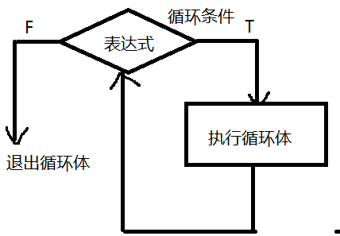

梳理知识点
1、类型转换
自动转换
var sum = 0;
sum += 30;
alert(sum)
强制转换 :
parseInt()
parseFloat()
Number()
Boolean()
toString()
isNaN()
eval()
2、选择结构
if(){
}else if(){
}
switch(){
case 1 : ...
}
2、循环结构
循环 ：重复做某件事
控制语句 ：
while() 语法结构:
while(表达式){
循环体;
}
说明 ：
1、表达式一般是条件表达式
2、循环体的语句如果有一条，{}可以省略
循环五要素：
1、循环变量
2、循环变量初始值
3、循环变量终值（循环条件）
4、循环变量的增值（步长）
5、循环体 （反复执行的代码）
执行逻辑 ：

do..while()语法结构：
do{
循环体
}while(表达式)
执行逻辑 ：

while和do...while的区别：
while 先判断表达式，后执行循环体，循环体可以一次也不执行
do...while 先执行循环体，后判断表达式，循环体至少要执行一次。
for()控制语句：
for(表达式1;表达式2;表达式3){
循环体;
}
说明 ：
表达式1 一般 为循环变量赋初始值
表达式2 一般 为循环变量设置终值（循环条件）
表达式3 一般 循环变量增值（步长）
执行逻辑 ：

for...in
【注】：一半用来遍历json对象，遍历的结果是json对象的键，只能遍历对象，数组也是对象
特点：
1、自动取出下标
2、下标类型为字符类型，即键
3、下标从0开始到最大下标，即长度-1
4、没有循环条件
for . . . of
【注】：只能遍历集合，遍历的结果是值
json = {
data : [ { "uname":"lichune" } ] ,
zm : 15,
}
for( var i in json ){
console.log(i)//data,zm
}
for( var i of json ){
console.log(i)//TypeError: json is not iterable
}
for...of
var set = new Set([1,2,3,5])
for( var i of set ){
console.log(i)//1,2,3,5
}
循环类型题 ：
1、打印输出
2、求和
3、每几个数换行
4、循环体嵌套（图形题）
5、求个数
3、break关键字（重点）
break ： 用于 switch和循环体中
break表示中断
break ： 结束本层循环体
4、continue 继续
continue ： 只能用于循环体中
表示 结束本次循环，继续执行下一次循环
5、for 和 while的使用场景
有明确的循环次数 使用for
没有明确的循环次数 使用while